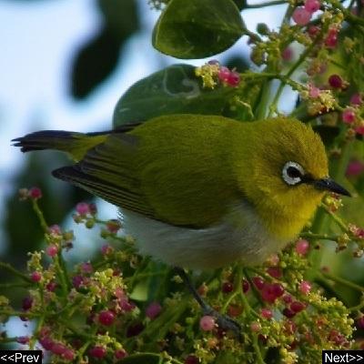

Khijadiya bird sanctuary
Khijadiya Bird Sanctuary is a bird sanctuary also known as safe haven for birds located in Jamnagar district of Gujarat, India. It has about 300 varieties of migratory birds.
Area:
6.05 km
2